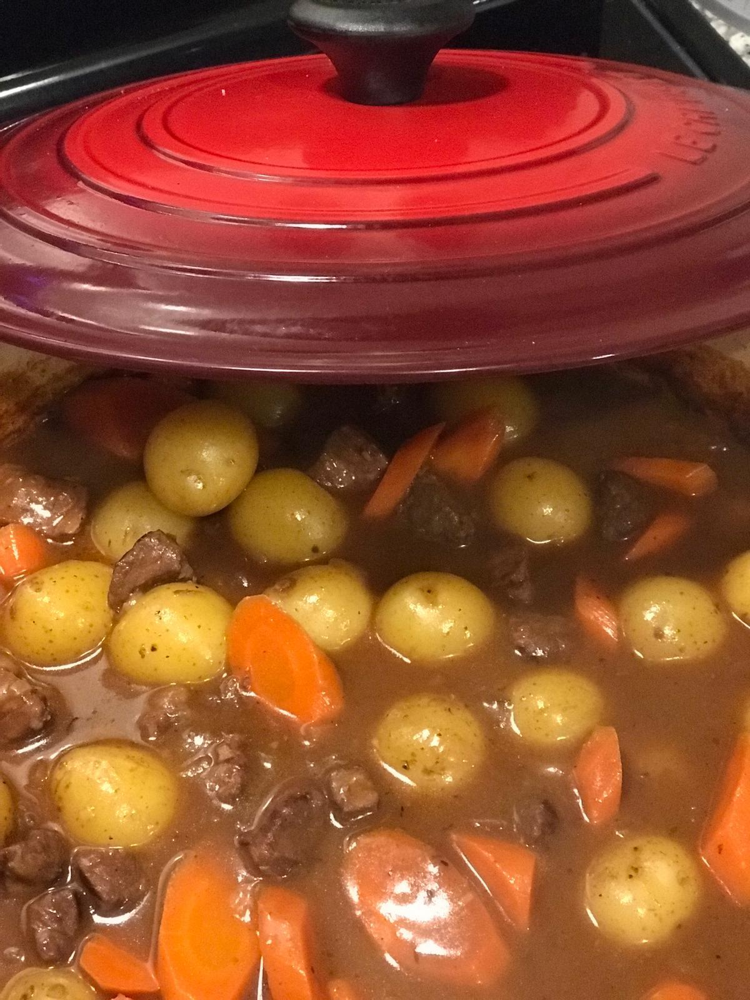

Cooking Tips

- Make sure your work area is well lit
- Replace your kitchen sponge often
- To avoid your cutting board slipping as you chop, put a damp paper or kitchen towel under your cutting board
- Get your knives professionally sharpened once a year to revive those knives. Your chopping will get faster, more precise
- Get your knives professionally sharpened once a year to revive those knives. Your chopping will get faster, more precise
- Write a note in your recipes and cookbooks after preparing that dish and you’ll not forget the adaptations or modifications you made to improve it